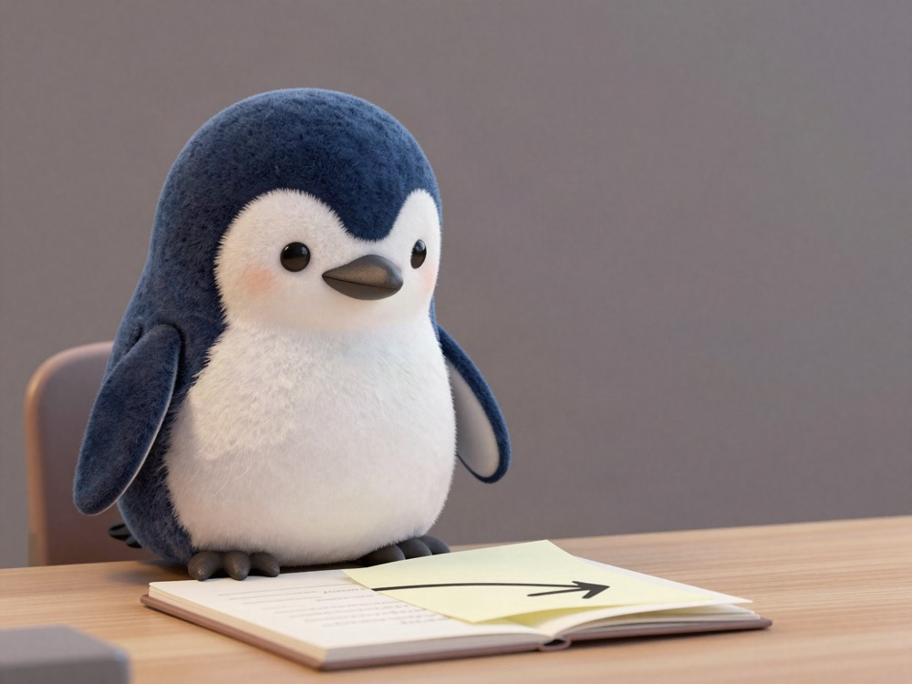

📚 STUDY AND ENGLISH⚡ 22 SEC
Another tip for difficult documents at work: read each sentence from the left 👈

Tip Number 2
A tip for reading difficult documents at work, number 2 🐧
From The Left
Read the letters properly from the left.
Spacing Out
You know, when I am reading a document carelessly, most of the time I am spacing out and reading from somewhere in the middle. Without noticing, it happens a lot that I am not reading properly from the beginning of the sentence.
So Read Left
So, read the sentence properly from the left.
PREVIOUS POST
A tip for difficult documents at work: read only the table of contents